Elena, 49 · Fresno to Santa Rosa, California
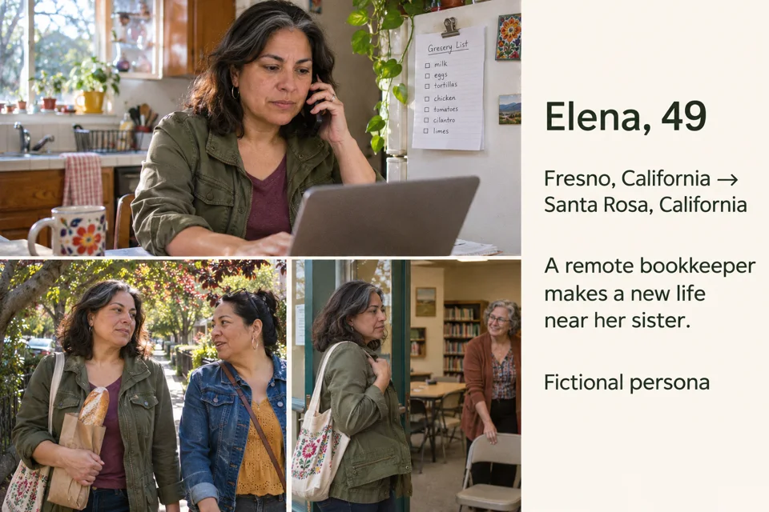
Elena grew up in Fresno and moved to Santa Rosa six months ago to be closer to her sister Maribel. She kept her bookkeeping clients and works from a rental near the Junior College neighborhood. She’s learned which bakery still has a loaf when she clocks off. She misses having someone she can text on a Tuesday to go for a walk. Maribel sends her a library listening circle. Elena wants to know who’ll be at the door and what happens in the first ten minutes.
Marcus, 44 · Stockton to Oakland, California
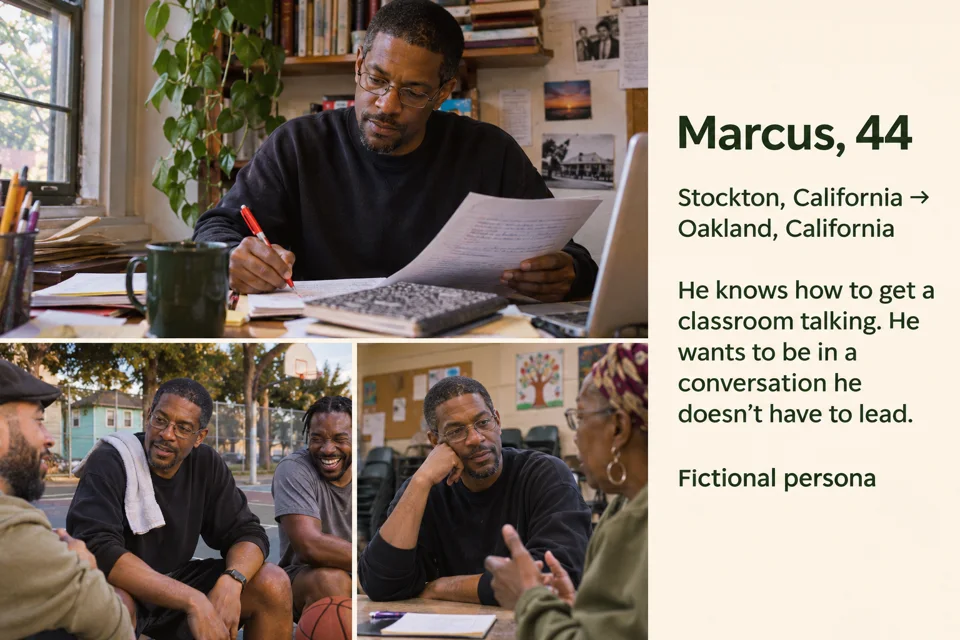
Marcus grew up in Stockton and lives in Oakland’s Laurel District. He teaches high-school history and still leaves a little space for Sunday pickup basketball in his grading schedule. He knows who on his team will bring an extra water bottle and who always shows up late. A teammate sends him a circle about listening across differences. He’d give it a Thursday if he knew how the conversation starts and whether he can pass.
Priya, 53 · Edison, New Jersey, to Walnut Creek, California
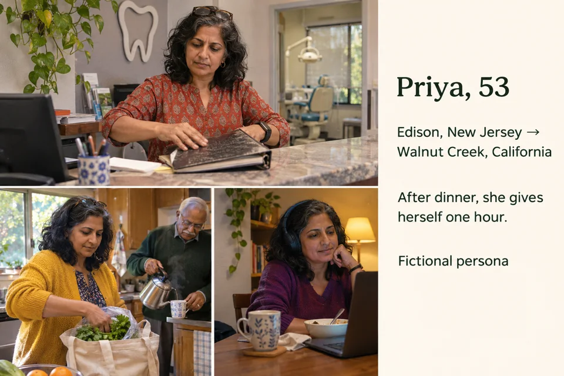
Priya grew up in Edison and lives near Walnut Creek’s Larkey Park. She manages the front desk at a dental office and drops groceries at her dad’s place after work. She still hums the alto parts from her old choir while she stacks oranges in his fruit bowl. An online circle after dinner could give her one dependable hour at her own kitchen table, with her camera off and a clear end time.
Jo, 59 · Tacoma, Washington, to Vallejo, California
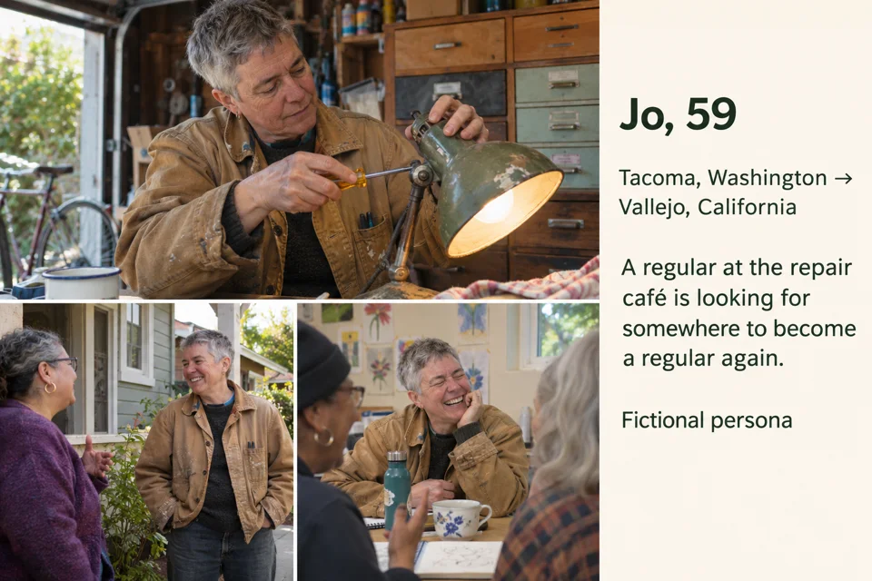
Jo grew up in Tacoma and lives in Vallejo’s Heritage District. They used to run the Saturday repair café. When it lost the room, neighbors kept bringing over lamps, but the conversations got shorter. A twice-monthly gathering about neighborhood life sounds like somewhere they could become a regular again. Jo would come back if someone remembers the story they told about a lamp that used to sit in their dad’s shop.
Renee, 56 · Richmond, California
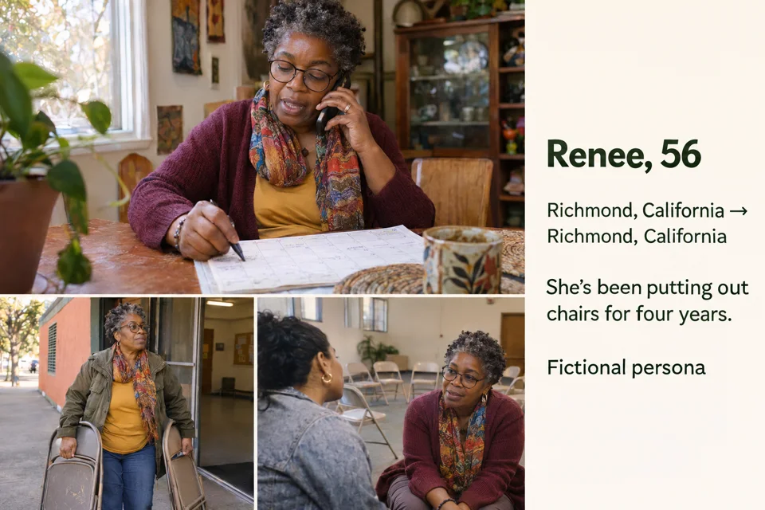
Renee grew up in Richmond’s Iron Triangle and now lives in North & East Richmond. She’s hosted a monthly circle at a community center for four years. Her co-host taught her to give people time to finish, especially when the room goes quiet. She puts the dates in a paper planner and pulls up one extra chair. She wants people to know what they’re walking into and a way to tell everyone when the room changes.
Daniel, 38 · Salinas to South San Francisco, California
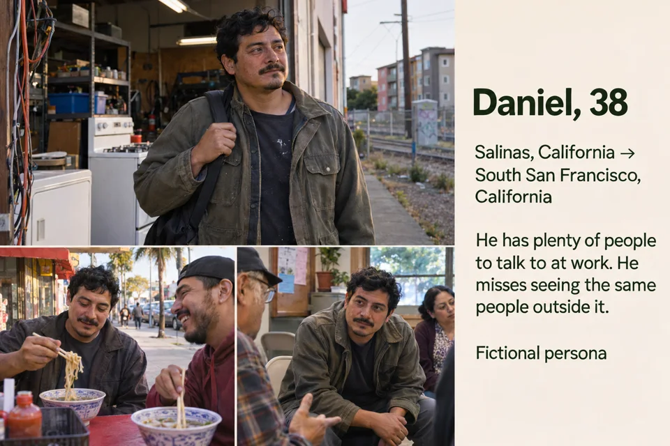
Daniel grew up in Salinas and lives a few blocks from Grand Avenue in South San Francisco. He repairs appliances and can talk with a customer for twenty minutes about a dryer. After work he sometimes meets his cousin for noodles, though their shifts seldom line up. A small gathering about fixing things and neighborhood life gets him through the door. He’d make it a habit if it fitted a rotating Saturday off and he could see familiar faces.
Nia, 37 · Baltimore, Maryland, to Minneapolis, Minnesota
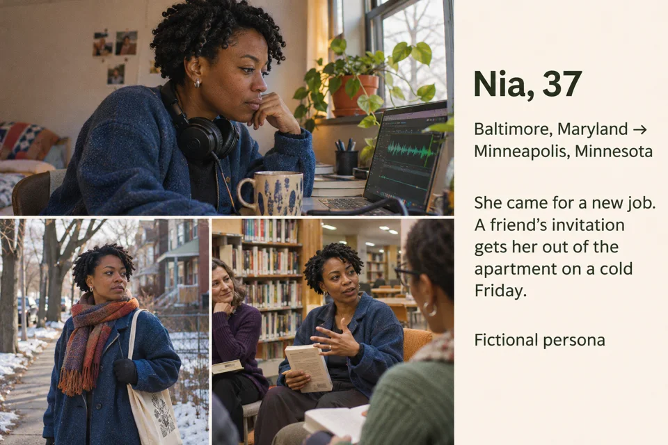
Nia grew up in Northeast Baltimore and moved to Minneapolis for an audio production job. She lives in Powderhorn and sends her old friends voice notes on cold walks home. She’s good at hearing what to keep in a recording. She’s still working out who she can call for dinner on a Friday. A colleague invites her to a library reading circle about books people grew up with. She comes with a paperback in her tote and goes home with a recommendation written on the back of a receipt.
Kate, 38
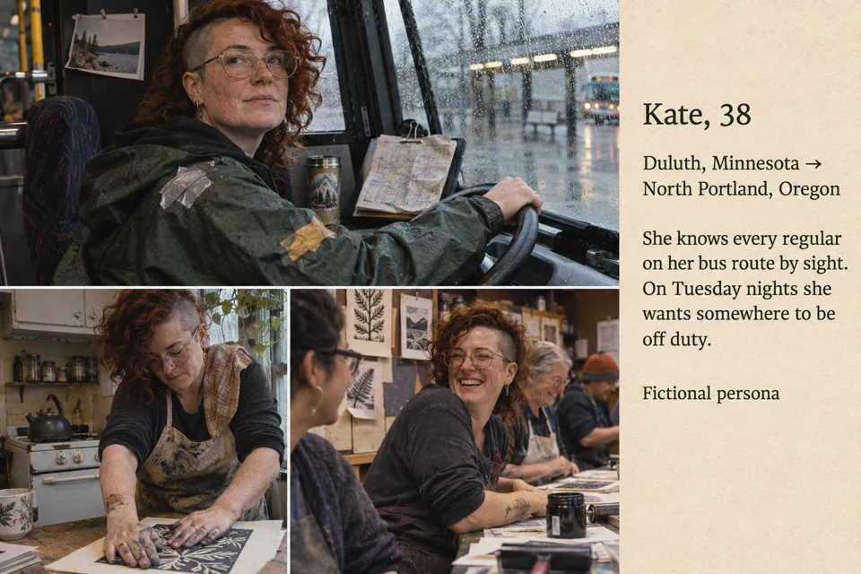
Kate grew up in Duluth, Minnesota, and now lives in St. Johns in North Portland. She drives a city bus and makes linocuts at her kitchen table. A Tuesday printmaking circle gives her a place to spend time with people after being on duty all day.
Tom, 46
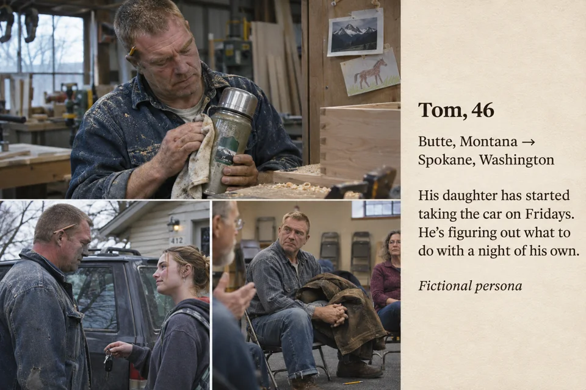
Tom grew up in Butte, Montana, and now lives in Spokane’s West Central neighborhood. He works at a cabinet shop and still keeps his daughter’s childhood drawing by his bench. When she starts taking the car on Fridays, he tries a conversation circle at a recreation center.
Mara, 54
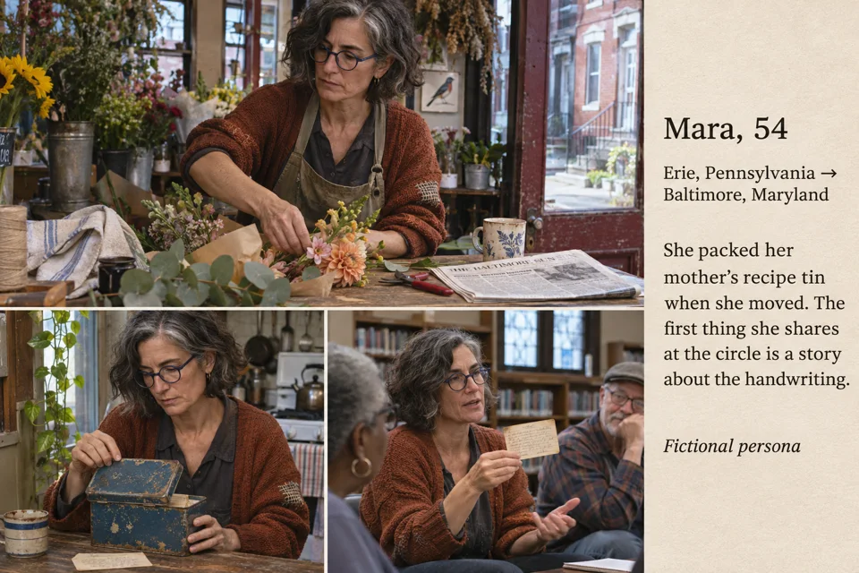
Mara grew up in Erie, Pennsylvania, and now lives in a rowhouse in Baltimore’s Highlandtown neighborhood. She works in a flower shop. When a library circle asks her to bring something from home, she brings a recipe card from her mother’s blue tin.
Paul, 61
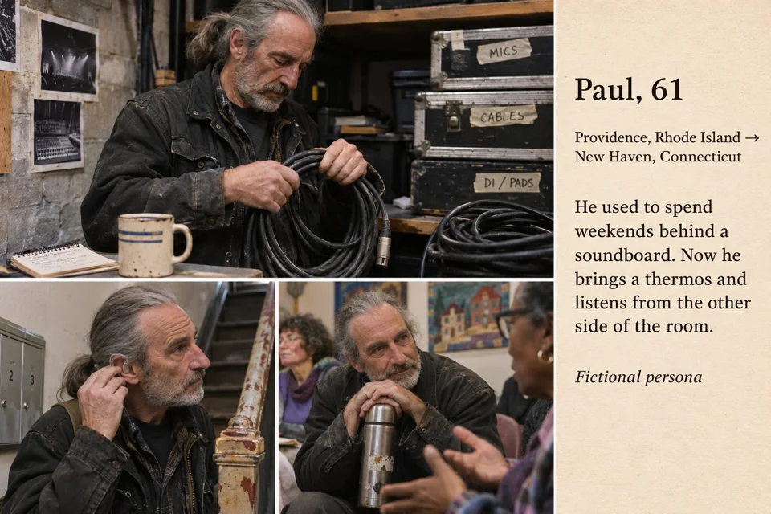
Paul grew up in Providence, Rhode Island, and now lives in New Haven’s Edgewood neighborhood. He spent weekends mixing sound for local gigs. At a neighborhood story circle, he picks a seat where he can see the speaker’s face and brings the same dented thermos he used at shows.